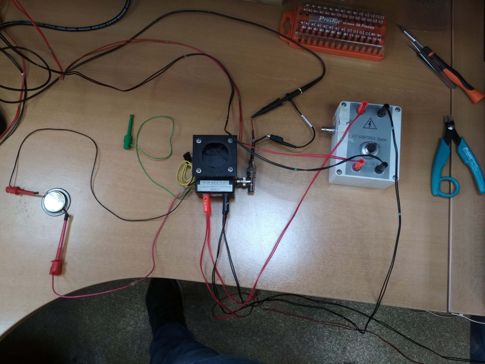
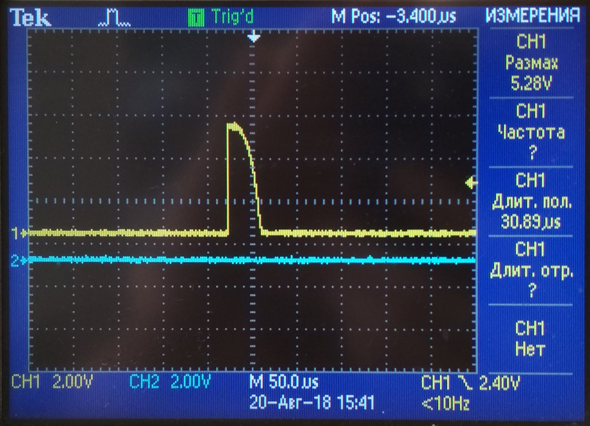
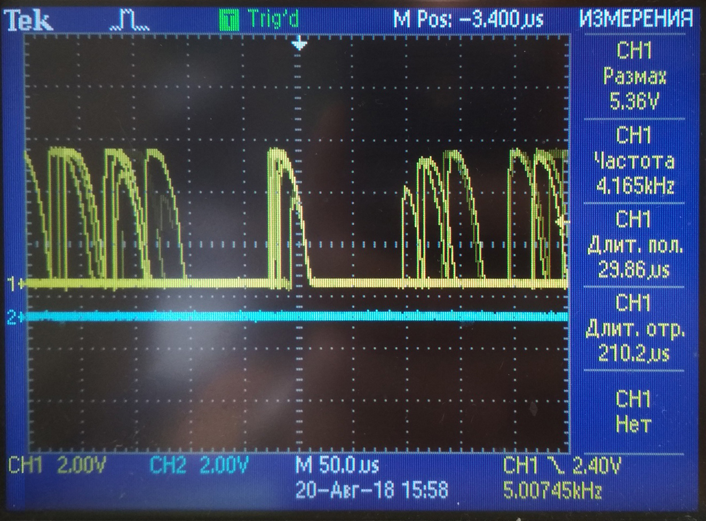

Собрать схему для проверки. Взять пульт проверки счетчиков Бета-1, подключить к источнику питания Б5-78/6 (подаем напряжение 5,0 В), к пульту регулируемого источника вторичного высоковольтного питания(подаем напряжение 12-13 В), к осциллографу. К выводам пульта подключаем счетчик: 
Вид сигнала на осциллографе (в зависимости от вида счетчика, сигнал может отличаться): 
Далее устанавливаем источник излучения на проверяемый счетчик. Сравниваем показания частоты на проверяемых счетчиках, частота счетчиков из одной партии должна быть примерно одинаковая. Вид сигнала на осциллографе при воздействии источника: 
Счетчики, у которых частота сильно отличается от других в партии либо они не реагируют на источник излучения, требуют перепроверки.